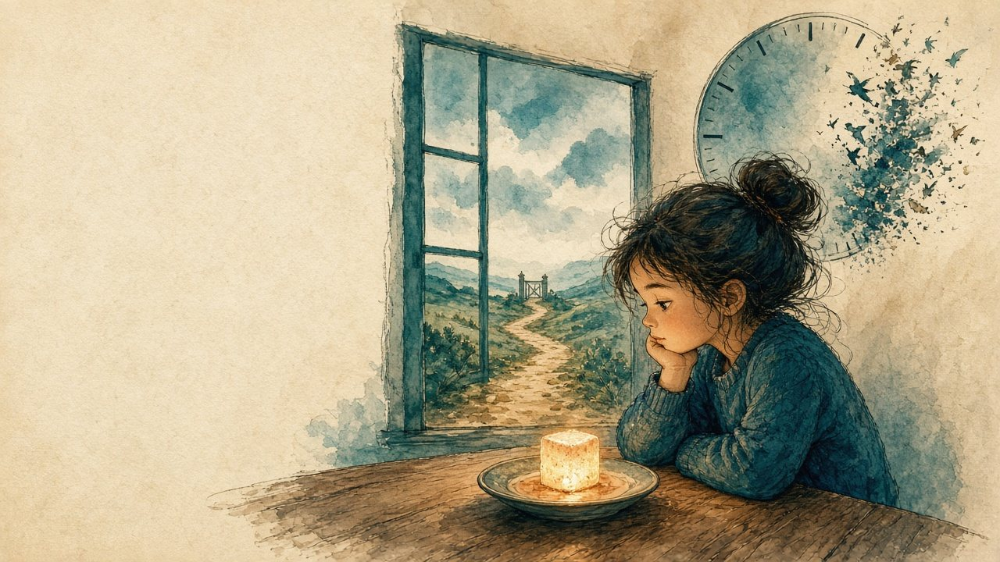
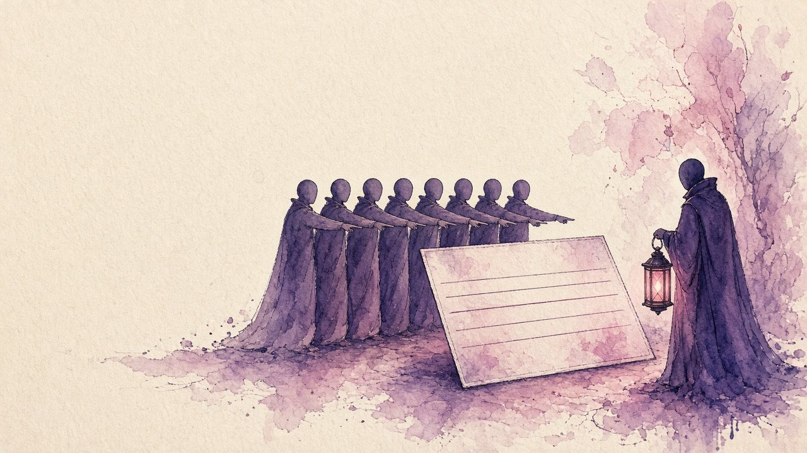
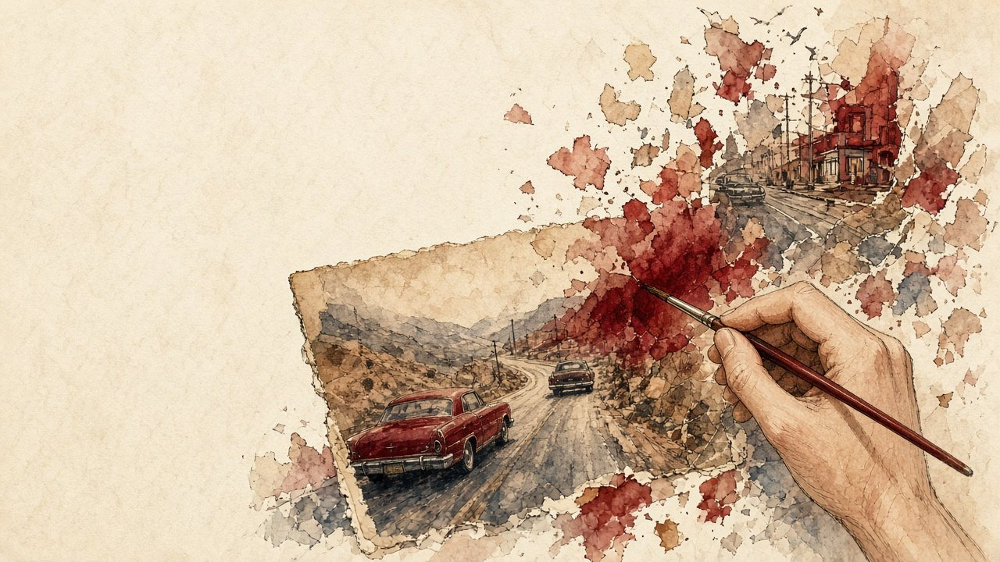
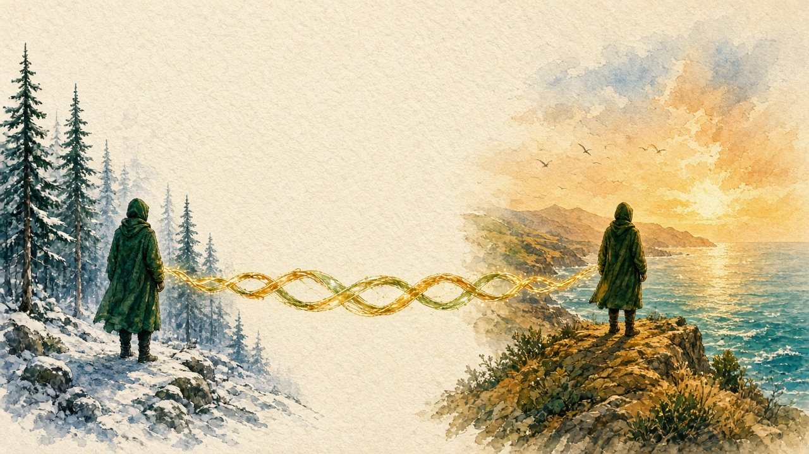
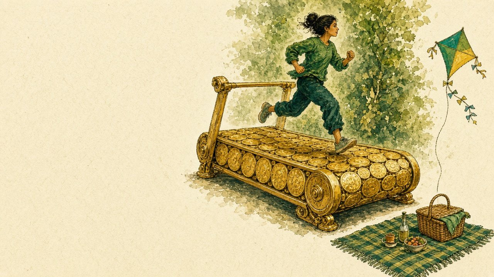
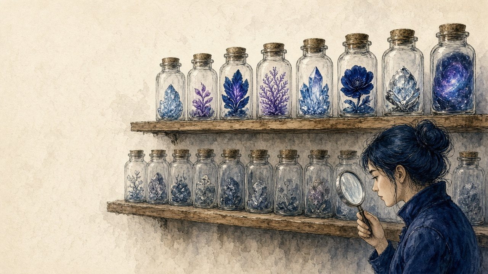
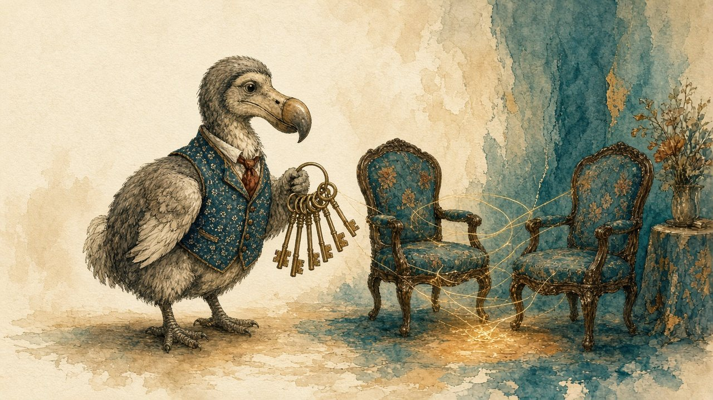
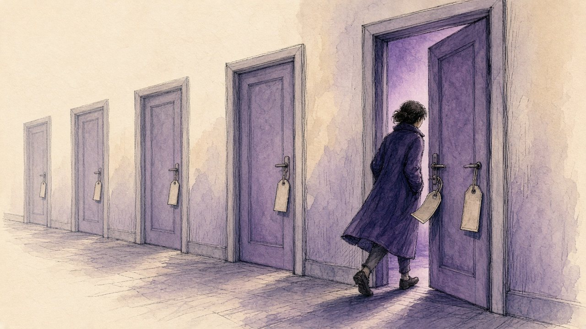
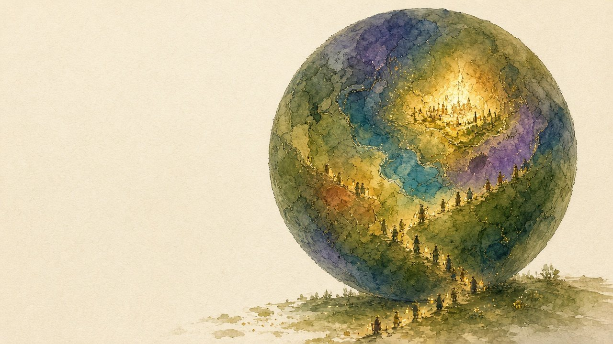

Twelve questions about how the mind works and how the field works. Six famous experiments, then six deeper questions for psychologists and other professionals. Every question comes at two levels: A2/B1 and B2/C1.
A child is left alone with a sweet. A gorilla walks through a basketball game. A whole room gives the wrong answer. Each of these is a real experiment that changed what people thought about the mind.
Each lesson starts from one of them. You meet the key words, read the story in three short parts, practise one grammar structure the story needs, test your thinking on five cases, and then speak. The second set, going deeper, asks how psychology checks itself: whether results repeat, what ethics allows, whether the method matters, who decides what is normal, whether experts beat formulas, and whose minds the research is about. Pick a question, then pick your level.
The map — click a circle to jump to its lesson
Six studies that changed what people thought about the mind. Open a question, then choose A2/B1 or B2/C1.





How the field checks itself: replication, ethics, therapy, diagnosis, prediction and who the research is about. The content and language are pitched at people who work in psychology, mental health, education and research.




The words you need, unlocked from context before you read.
Three short parts, each with a recall check and a question.
One structure the story needs, with three exercises.
Five cases and a thought experiment to test the ideas on.
Timed tasks that bring words, ideas and grammar together.